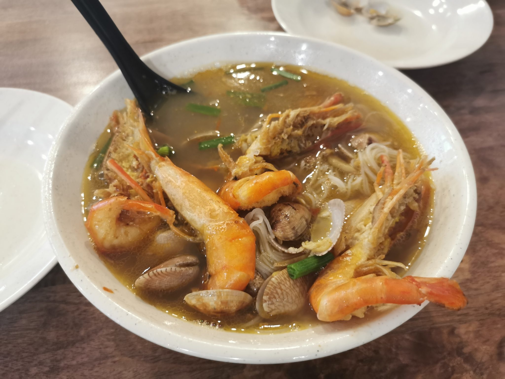

あお木のこだわり
炭火で燻したような香りと、醤油だれ、煮干しのだし。あお木が大切にしている一杯の輪郭を、少しだけご紹介します。
炭火と仕込み
中華蕎麦の魅力は、スープ一杯に積み重ねられた仕込みの丁寧さにあると考えています。あお木でも、炭火を思わせる香りを大切にしながら、スープをじっくりと仕込んでいます。配合や仕込み時間などの詳細は、店舗の方針により非公開としていますが、一杯一杯丁寧に向き合う姿勢を大切にしています。


醤油だれと煮干しだし
醤油だれの香りと、煮干しだしの奥行き。この2つを軸に、昔ながらの落ち着いた味わいを目指しています。中華蕎麦という名前の通り、ラーメンよりも素朴で静かな一杯になるよう、香りと香りのバランスを大切にしています。
店主より
一杯一杯、丁寧に仕込んでいます。炭火の香りと醤油だれ、煮干しのだし。それぞれの持ち味を大切に、静かに向き合いながらお出ししています。